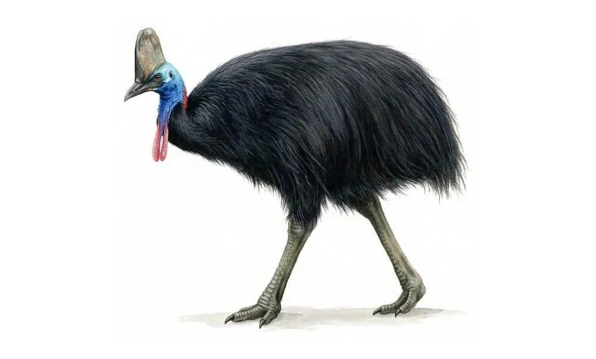

Casquetall blade-like keratin helmet
Neckbare vivid blue skin, red nape
Wattlestwo pendulous red lobes
Plumagecoarse glossy black, hair-like
Feet3 toes; 12 cm dagger claw
- 1Casque tall blade-like keratin helmet
- 2Neck bare vivid blue skin, red nape
- 3Wattles two pendulous red lobes
- 4Plumage coarse glossy black, hair-like
- 5Feet 3 toes; 12 cm dagger claw
Southern Cassowary
Casuarius casuarius johnsonii
Casuariidae · Cassowaries
Length
130–170 cm
Status
LCNTVUENCR
EPBC Endangered
Breeding
JFMAMJJASOND
Jun–Oct
Description
- Casque — tall grey-brown blade-like keratin helmet
- Neck — bare vivid blue skin, red on the nape
- Wattles — two pendulous red wattles on the foreneck
- Plumage — coarse, glossy black hair-like feathers
- Feet — three toes; inner claw a 12 cm dagger
Male glossy black, hair-like plumage; bare blue neck, red nape and twin wattles; tall horny casque. Female larger (to 1.8 m, 60+ kg), taller casque, brighter bare skin. Juvenile brown with dull head, rudimentary casque; chicks striped black and cream.
Behaviour
Strides the rainforest floor alone, gleaning fallen fruit; the key rainforest seed-disperser. Solitary, sedentary in a fixed home range; deep booms and rumbles often heard before seen. Wary; sparse.
Wet Tropics + Cape York ranges
RainforestWetlandsMangroves
Distribution
Confined to tropical NE Queensland: Wet Tropics rainforests from Cooktown to the Paluma Range (strongholds at the Daintree and Mission Beach), plus disjunct Cape York populations in the Iron and McIlwraith Ranges. Mostly below 1,100 m.
Breeding
Jun–Oct. Clutch 3–5, usually 4, olive-green. Ground scrape lined with leaf litter; male alone incubates ~50 days and rears chicks.